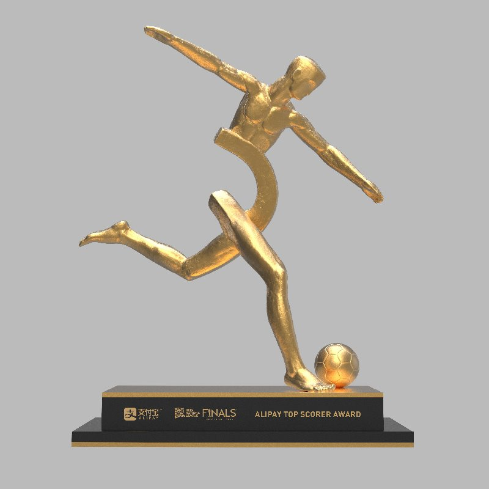
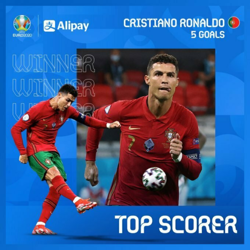

Редакция спорта
Топ бомбардир AliPay


С пятью голами и одним пасом Криштиану Роналду стал лучшим бомбардиром ЕВРО-2020 и получил награду Alipay.
На постамент трофея нанесен уникальный хеш-код в знак того, что достижение бомбардира будет навечно сохранено на AntChain, блокчейн-платформе Ant Group. Alipay также воссоздал цифровой трофей в золоте. Цифровой трофей на базе AntChain - это его уникальная копия, защищенная от несанкционированного вмешательства, которая будет вручена только избранным. Кроме того, драгоценные моменты взятия ворот лучшими бомбардирами при помощи технологии AntChain станут коллекционными предметами. Цифровые коллекционные экземпляры останутся на вечном хранении в УЕФА.
 Автор статьи: Черкасов Петр
Мои контакты: